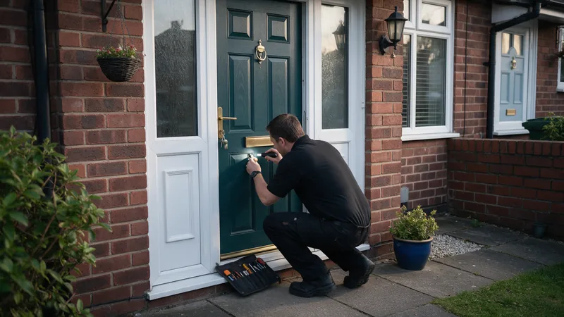
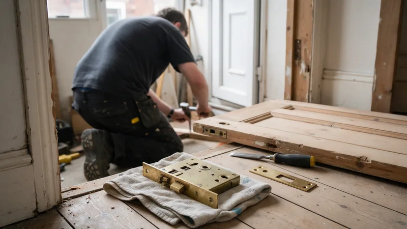

What happens when you ring
The first thing we ask is whether any other way into the house is open, because a surprising number of lockouts end with a back door or a kitchen window somebody had forgotten about. The second is whether anybody else holds a key, since a spare half a mile away beats any locksmith alive. If neither of those gets you in, then it is our job.
Opening without damage
On an ordinary house door the aim is always to open it with the lock still working afterwards, and that is how most of them finish. It takes longer than forcing it and it costs you less, because at the end of it you still have the same lock and the same door.
There are doors where that is not possible. A lock that has already been forced, a cylinder that has gone, a mechanism that has broken with the hooks thrown: on those the way in is through the cylinder, which gets replaced on the spot. What should never happen is somebody arriving and going straight at the door with a drill without telling you what they are about to do.
Lost keys are a different job
If the keys are only lost, we can get you in and cut you a new set. If they were taken, or lost with a wallet or a bag with your address in it, then somebody out there is holding a working key to your front door and the right job is new cylinders rather than new copies. We will say so, and it is still your call.
Snapped keys
Leave it where it is. The temptation is to get the pliers out and have a go, and pushing the stub deeper is what turns a short extraction into a cylinder change. A key that snapped did so because the lock was stiff, so once the stub is out it is usually worth changing the cylinder rather than waiting for the next one to go.

Generated photoGenerated for this demo. Not a photograph of a real job.

Generated photoA mortice lock out of a timber door. On older doors this is often what is behind a key that will not turn.
On the day
How this one usually goes.
- We ask the awkward questions firstIs another door open, does anybody else have a key, and is anybody or anything shut in the house. Two minutes that sometimes saves the whole visit.
- We look at the door before we touch itWhat sort of lock, what state it is in, whether it has been forced before. That decides which way in is going to work.
- We open it the way that keeps the lockNo damage where it is possible, which is most of the time. You get told what we are doing and roughly how long it takes.
- If a part has to go, you hear firstWhich part, why, and what replaces it. Nothing gets drilled or forced on a nod.
- You get keys that turn properlyEvery key tried in the lock before we leave, and the door locked and unlocked a few times with the handle, not just the key.
A sample running order for this demo. Yours depends on what is on the door.
Questions
Asked about this job.
Can you get me in without damaging the door?
Most of the time, yes. On a standard front door the whole point is to open it with the lock still working afterwards, and that is how the majority of lockouts end.
Where it cannot be done, the casualty is the cylinder rather than the door or the frame, and it gets changed there and then. You will always hear what is about to happen and why before anybody starts.
What do you need me to prove?
That it is your house, in a reasonable way. Post with your name on it, a bill, a driving licence, a neighbour who knows you, a landlord or agent on the phone. It is not us being difficult. It is the one thing that stops this trade being used by the wrong people.
If you genuinely have nothing on you, say so when you ring rather than when we are stood on the step, and we can talk about what would work.
I have snapped the key off in the lock. What now?
Stop, and leave it alone. Do not try to turn it with pliers and do not poke anything into the keyway, because both tend to push the stub further in.
If the broken end is sticking out it often comes out whole. If it has gone in flush it is more awkward, and if the lock was already stiff the sensible end to the job is a new cylinder, which is a part rather than a door.
My keys were stolen. Is that the same job?
No, and it matters. Getting you in is the same, but after that you want the locks changing rather than new keys cut, because the old key still works and somebody has it.
If they were lost with anything that shows where you live, treat it the same way. It is the difference between a locksmith visit and a long month of wondering.
General trade knowledge written for this demo, not advice on your door.
Our work
Sample jobs like this.
 Generated photoIn without a mark on the doorStretford · sample
Generated photoIn without a mark on the doorStretford · sample Generated photoKey snapped in the cylinderSale · sample
Generated photoKey snapped in the cylinderSale · sample Generated photoBack off a late shift, no keysUrmston · sample
Generated photoBack off a late shift, no keysUrmston · sample Generated photoHandle set and cylinder changedEccles · sample
Generated photoHandle set and cylinder changedEccles · sampleMade up samples with generated pictures. Tap one for the detail.
Also
The other things we do.
Lock changes and upgrades
New cylinders, new mortice locks, new keys. The usual reasons are moving in, losing a set, or a lock that has got stiff enough to worry you.
More →uPVC door lock and mechanism repairs
The door you have to lift and lean on to lock. Usually the gearbox, the alignment or the cylinder, and all three are a repair rather than a new door.
More →Lock repairs after a break in
Secure tonight first, then put right properly: the lock, the keeps, the frame. Boarding up where a door or window will not shut.
More →Window locks
Key operated window locks, handles and the strips inside the frame. The cheapest part of a house to secure and the one most often left.
More →Safes and key cutting
Keys cut from a blank while you wait, and domestic safes fitted where they are actually worth having. Where it goes matters more than the safe.
More →Shall we come and look?
Tell us which door it is and your postcode and we will book someone in. If you are locked out right now, use the urgent line instead.